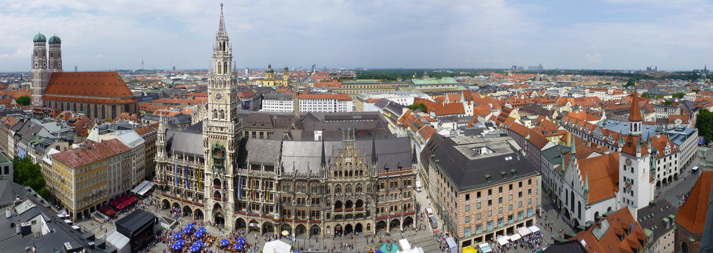
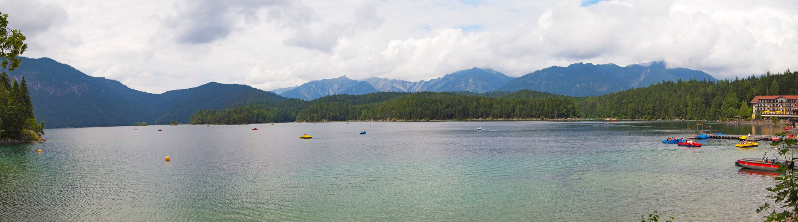

THE SAMPLE ITINERARY
A CURIOUS EXPLORER’S EDITIONChicago Munich
5 days on the ground · Culture, good food & little detours
Good to know
A trip that feels like you. Our AI turns your ideas into a day-by-day itinerary—with the good food, little detours, and details all figured out.

Big sights, quiet corners, and time to take it all in.
Here’s what your next chapter could look like.
5 days on the ground · Culture, good food & little detours
Good to know
Tell us where you’re leaving from, where you’re headed, and how you like to travel.
Get a daily route that brings together standout sights, food stops, and discoveries along the way.
Use the plan as your starting point. Stay longer over lunch. Follow the interesting street. It’s your trip.

Lake Eibsee, Bavaria · Photo: Tiia Monto · CC BY-SA 4.0 · resized & cropped